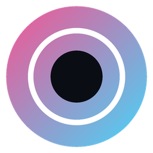

PartyMixUltimo aggiornamento: 14 novembre 2026 · vale per PartyMix su iPhone, iPad, Android, macOS, Windows e Linux.
In breve: PartyMix non ha account, non raccoglie dati personali, non usa statistiche né pubblicità propria e non manda niente all’autore. Playlist, libreria musicale, file audio e impostazioni restano sul tuo dispositivo: niente viene caricato su internet.
Il proiettore può usare il microfono per far muovere le forme a tempo con il suono della stanza. Il suono viene analizzato sul momento, nel dispositivo: non viene registrato, salvato né inviato a nessuno. Il permesso si può negare: il resto dell’app funziona lo stesso.
Per funzionare PartyMix si collega ad alcuni servizi pubblici. A ognuno manda solo quello che serve:
L’app non manda a questi servizi il tuo nome, la tua posizione o altri dati personali; ricevono però, come ogni sito, l’indirizzo IP della connessione.
Sei tu a scegliere cosa scaricare e ne sei responsabile: scarica solo contenuti che hai il diritto di scaricare (per esempio tuoi, con licenza libera o di cui hai l’autorizzazione). PartyMix non aggira protezioni anticopia (DRM), abbonamenti o restrizioni di accesso.
Se scegli «Commenti e suggerimenti», l’app apre la tua app di posta (o Gmail/Outlook) con il messaggio già scritto. Parte solo se lo invii tu, dal tuo account, e contiene solo quello che scrivi più la versione dell’app e il sistema.
PartyMix non raccoglie dati di nessuno, quindi neanche dei minori.
PartyMix è creato da Giuseppe Starace. Per domande sulla privacy puoi aprire una segnalazione su GitHub o scrivere dall’app con «Commenti e suggerimenti».
PartyMix has no accounts and collects no personal data: no analytics, no advertising of its own, nothing is sent to the developer. Playlists (no limit on their number), favourites and settings stay on your device and are deleted with the app.
On computers, audio files you import or download go to the Music › PartyMix Library folder (in the browser version, the browser’s database). Their tags are read only to display them and are never uploaded. These files stay after you uninstall the app; delete them from that folder or with «Elimina download». For imported files the app only remembers the original file and folder name, to show where they came from. An optional YouTube API key is stored only on your device.
What you type in «Cerca su YouTube» is sent to Google (through the official YouTube Data API v3 with your key, or by reading YouTube’s public results page without one). Searching your own library happens entirely on the device. With «⬇ Download» the yt-dlp program installed on your computer fetches the content from the address you entered, whose site sees the request like any browser’s; the file, its cover and its details stay in Music › PartyMix Library (the download list in metadata/jobs.json). Only public web addresses are accepted, never local files or home-network addresses. You choose what to download and are responsible for it: download only content you have the right to download. PartyMix does not bypass DRM, paywalls or access restrictions.
The projector may use the microphone to animate shapes with the sound in the room. Sound is analysed on the device in real time and is never recorded, stored or transmitted.
To work, the app contacts public services: YouTube’s official embedded player plays the songs (Google’s privacy policy applies); for a Spotify link, the app reads the public playlist page to get the track list; lyrics services (LRCLIB, lyrics.ovh, Genius) receive the song title and artist. Feedback is sent only if you send it yourself, from your own mail app. If you link your own home NAS, playlists, songs and device names go only to that NAS, on your network.
Contact: GitHub issues.